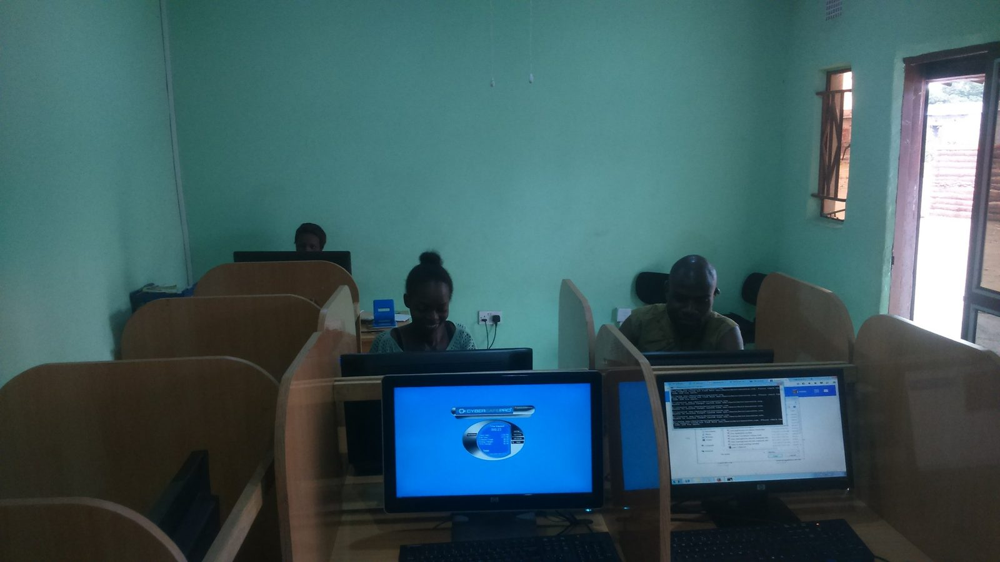
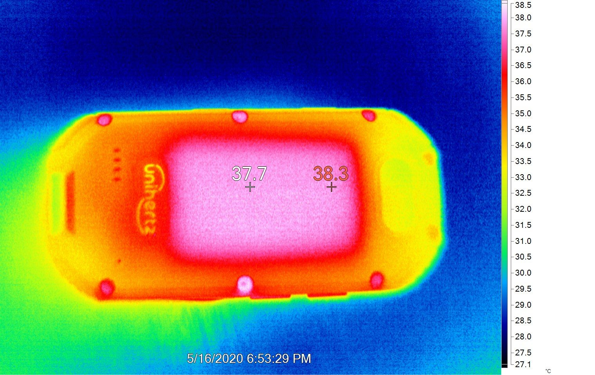
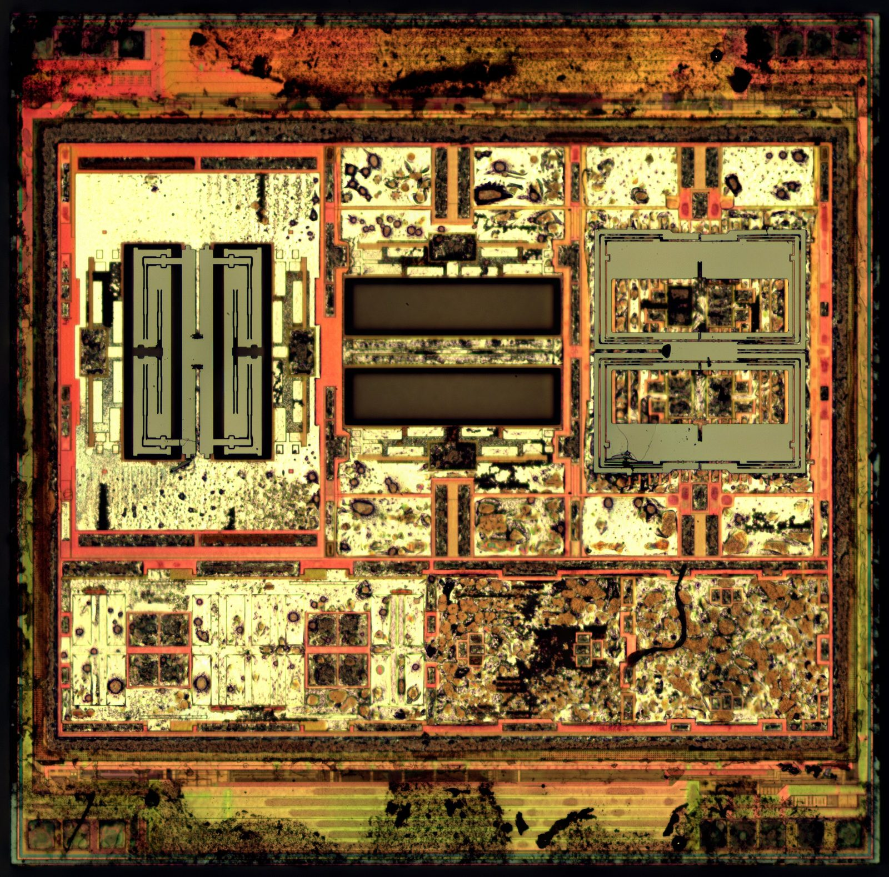

Unit 1 · Lesson 10
Can machines think?
Turing asked it in 1950. Today you can chat with a program that writes like a person. So, can machines think?
The story
In 1950 Turing found the question "Can machines think?" too vague. So he proposed a game. A judge sits in another room and types questions. Two hidden players answer: a person and a machine. If the judge cannot tell which is which, should we say the machine thinks?
On 9 January 2007 Steve Jobs showed the iPhone: a phone, a music player and an internet device in one. At first you could not add apps from other companies; the App Store opened only in July 2008. Inside the phone there was a computer on a single chip.
.jpg){kind=link}
NVIDIA made GPUs for video games: chips with thousands of small cooks. They turned out to be perfect for training AI, which also needs many simple calculations at the same time. In June 2024 NVIDIA was, for a short time, the most valuable listed company in the world.

Today chatbots run on these chips in big data centres. In a 2025 study, people chatted for five minutes with a real person and a chatbot at the same time. They chose the chatbot (GPT-4.5) as "the human" 73% of the time. That does not prove it thinks or understands.
Not everyone is part of this story. In 2025 about 2.2 billion people, about one in four, did not use the internet (ITU). Most of them live in poorer countries and in the countryside, and more of them are women. A chatbot is only "for everyone" if everyone is online.


The science
The whole kitchen on one chip
A phone has a system on a chip (SoC): the CPU (the cooks), the GPU, the memory controller and the radios on one piece of silicon. Phones grew up on ARM, a different family of instructions from the x86 family in most laptops. Apps are written for one family, so a laptop program cannot simply run on a phone.
- The cook = CPU core
- The metronome = clock (GHz)
- The countertop = cache
- The workbench = RAM
- The pantry = storage (SSD / HDD)


The tank and the window
mAh (milliampere-hours) is the size of the battery's tank, not the hours. How long it lasts depends on what drinks from it: the screen, the radios, the games. Every calculation makes heat; when the chip gets too hot, it slows itself down. A hot phone is not broken. The screen is a grid of pixels (the resolution). 120 Hz means the picture is redrawn 120 times a second, so scrolling looks smooth.


Senses and voices
A sensor turns something in the world into numbers. The accelerometer knows which way is down: it turns the screen and counts steps. GPS listens to satellites to find where you are (it does not send anything to them). There are also a fingerprint sensor and a light sensor. Radios send the numbers: Bluetooth for a few metres, Wi-Fi for a house or a school, 4G and 5G for kilometres.


What a chatbot does, and doesn't
A chatbot is a program that writes text by predicting the next word, again and again. It learned patterns from huge amounts of writing. It does not look answers up in a book of true facts. It has no senses, and it has no built-in way to know if it is right: it can be wrong and still sound completely sure. So check what it says with a second source.
Check now
Quick questions. You see the answer at once.
More mAh always means the battery lasts longer.
True or false?
What does a chatbot do when it writes an answer?
- it looks the answer up in a database of true facts
- it predicts the next word, using patterns from huge amounts of text
- it sends your question to a person
Which sensor turns the screen when you rotate the phone?
- GPS
- the accelerometer
- the light sensor
What is a system on a chip (SoC)?
- the SIM card
- the CPU, GPU, memory controller and radios on one chip
- the phone's battery
Try it
Read each answer and guess: was it written by a person or by a chatbot? Then read the clue.
Paper version
Play Turing's game on paper. For each question, read the answer and write PERSON or CHATBOT, with one reason. Example: "Add 34957 to 70764." Answer: "(after a pause of about 30 seconds) 105621". This is the answer Turing imagined in 1950: slow, and wrong (the right sum is 105721). Clues that often give a chatbot away: it never says no, it is very polite, it explains everything step by step, it is long and perfect.
Read a real-style phone listing. Click each line to see what it means in plain words. Then choose a device for each person.
Paper version
Octa-core 3.2 GHz: 8 cooks, the metronome beats 3.2 billion times a second. · 8 GB RAM: the workbench. · 256 GB storage: the pantry. · 6.7-inch 120 Hz OLED: the screen's diagonal, redrawn 120 times a second, each pixel makes its own light. · 5,000 mAh: the size of the battery's tank, not the hours. · 5G: the radio for the mobile network. · 50 MP camera: 50 million dots per photo.
This is an old smartphone with the back taken off. Drag each label to its number, or click a label and then a number.
Paper version
An opened smartphone (an iPhone 4). Find and name: 1 camera (top left) · 2 logic board: the system on a chip is under the metal shield · 3 battery connector, under the small metal cover · 4 battery (the big black block) · 5 charging (dock) connector (bottom) · 6 the metal frame, which is also the antenna for the radios.
Your turn
Exercises
From ★☆☆ (easy) to ★★★ (hard). Use a hint if you are stuck.
-
Exercise 1 ★☆☆
Match each sensor or radio to its job.
- GPS — ?
- accelerometer — ?
- light sensor — ?
- Bluetooth — ?
- 5G — ?
-
Exercise 2 ★☆☆
A phone screen is 120 Hz. How many times a second is the picture redrawn?
-
Exercise 3 ★☆☆
If a phone gets hot during a game, it is broken.
True or false?
-
Exercise 4 ★★☆
A listing says "5,000 mAh". What does it tell you?
- the battery lasts 5,000 minutes
- the size of the battery's tank
- how fast the phone charges
-
Exercise 5 ★★☆
Put these events in time order, oldest first.
- a study: people take a chatbot for a human (2025)
- NVIDIA briefly becomes the most valuable company (2024)
- the App Store opens (2008)
- the iPhone is shown (2007)
- Turing's paper on the imitation game (1950)
-
Exercise 6 ★★☆
If a chatbot sounds very sure, its answer must be right.
True or false?
-
Exercise 7 ★★★
Look at the phone listing in the spec decoder. Which TWO lines matter most for a grandmother who wants video calls with her grandchildren, and why?
-
Exercise 8 ★★★
In a 2025 study, people chose a chatbot as "the human" 73% of the time. Does this prove that machines think? Give one argument for and one against.
In one sentence
Machines can now imitate us well; whether that is thinking is still Turing's question, and yours.
Words of the chapter
- SoC (system on a chip)
- the whole kitchen on one chip: CPU, GPU, memory controller, radios SoC (sistema su chip)
- ARM
- the family of instructions most phones use ARM
- mAh
- the size of the battery's tank, not the hours mAh (milliampere-ora)
- refresh rate (Hz)
- how many times a second the screen is redrawn frequenza di aggiornamento (Hz)
- sensor
- a part that turns something in the world into numbers sensore
- radio
- a part that sends and receives numbers through the air: Wi-Fi, Bluetooth, 5G radio
- chatbot
- a program that writes text by predicting the next word chatbot
- imitation game
- Turing's test: can a machine pass as a person in a typed conversation? gioco dell'imitazione (test di Turing)